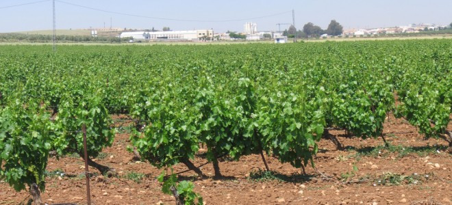

LUGARES PRINCIPALES DE ORIGEN DEL VINO
LA LEYENDA DEL ORIGEN DEL VINO
 Como en casi todos los productos y alimentos que nos han acompañado desde siempre en nuestro camino evolutivo, el vino tiene una leyenda sobre su origen. Cuenta la leyenda, que en Babilonia un rey persa almacenó uvas en un sótano de su palacio para consumir fuera de la estación. Obviamente estas uvas con el correr del tiempo fermentaron y desprendieron anhídrido carbónico, intoxicando a los que las cuidaban. Esta situación les hizo creer que las uvas se habían vuelto muy venenosas.Una de sus concubinas al intentar suicidarse por el desprecio del rey, tomando este jugo envenenado, muy contrariamente a lo que se suponía se sintió muy feliz y radiante. Al presentarse ante el rey con su alegría contagiosa, este la prefirió entre las otras. Puede llegar a decirse que esta mujer fue la descubridora de las bondades del vino. Pero hablando sobre orígenes más reales, podemos decir que el nombre del vino, según investigaciones recientes, tuvo su origen en un término hoy desaparecido de la lengua hablada en el antiguo Cáucaso, particularmente en Armenia, la palabra "voino", la que servía para designar el brebaje embriagador elaborado a partir del fruto del racimo de la vid. Por eso se puede establecer que el vino como tal surge en el oriente próximo. Es en la biblia donde aparece documentado en escritos, en el Antiguo Testamento, a través de Moisés se pone en evidencia la existencia de la vid y el vino. Aunque, se tiene conocimiento de la existencia de la vid desde mucho antes. La más antigua manifestación del género Vitis (las vides), data de hace más de 63 millones de años con el descubrimiento de una hoja fósil de una ampelídea en una región de Francia.LA PRIMERAS VIDES
 Las Vitis aparecen en Europa hace unos 26 millones de años, ocupando posiciones moderadamente cálidas en el Macizo Central. Más adelante, hace 2 millones de años, aparece la Vitis viniferae silvestris, quedando después de las glaciaciones en el Cuaternario, refugiada en la cuenca del mar Mediterráneo y sur del mar Caspio.
Las especies Proles Orientalis procedentes del sur del mar Caspio y las del Oriente Medio avanzaron hacia las riberas del Mediterráneo en sentido de este a oeste, mezclándose con las Proles Póntica originarias del Mar Negro, que también se movieron en este mismo sentido cruzándose en su emigración con las Proles Occidentalis procedentes del Occidente Mediterráneo que avanzaban en sentido contrario. Estas especies mezcladas entre sí, se cruzaron con la Vitis silvestris de la Europa del norte, dando origen a las actuales variedades de uva.
Las Proles Orientales presentaban racimos sueltos, con uvas de gran tamaño precursoras de las actuales variedades de uva de mesa. Mientras que las Proles Pónticas y Occidentalis tenían uvas más pequeñas con hollejo siendo antecesoras de las uvas de vinificación. Los cruzamientos de las anteriores con las variedades silvestres del norte de Europa, tuvieron como consecuencia la aparición de viníferas con granos de uva más pequeños y una mayor cantidad de antocianos y taninos, predecesoras de las actuales variedades tintas.
Los frutos de las Vitis silvestris son siempre tintos, por lo que las actuales variedades blancas proceden sin duda de mutaciones de albinismo, perdiendo el pigmento propio de dichas viníferas.
El hombre debió aprovechar los frutos de la Vitis silvestris que aparecían en su entorno. Cuando en sus territorios empezó a escasear la caza, se hizo agricultor y sedentario, domesticando y cultivando las plantas que crecían a su alrededor entre ellas la vid, surgiendo la Vitis vinífera por un proceso de selección.
Las Vitis aparecen en Europa hace unos 26 millones de años, ocupando posiciones moderadamente cálidas en el Macizo Central. Más adelante, hace 2 millones de años, aparece la Vitis viniferae silvestris, quedando después de las glaciaciones en el Cuaternario, refugiada en la cuenca del mar Mediterráneo y sur del mar Caspio.
Las especies Proles Orientalis procedentes del sur del mar Caspio y las del Oriente Medio avanzaron hacia las riberas del Mediterráneo en sentido de este a oeste, mezclándose con las Proles Póntica originarias del Mar Negro, que también se movieron en este mismo sentido cruzándose en su emigración con las Proles Occidentalis procedentes del Occidente Mediterráneo que avanzaban en sentido contrario. Estas especies mezcladas entre sí, se cruzaron con la Vitis silvestris de la Europa del norte, dando origen a las actuales variedades de uva.
Las Proles Orientales presentaban racimos sueltos, con uvas de gran tamaño precursoras de las actuales variedades de uva de mesa. Mientras que las Proles Pónticas y Occidentalis tenían uvas más pequeñas con hollejo siendo antecesoras de las uvas de vinificación. Los cruzamientos de las anteriores con las variedades silvestres del norte de Europa, tuvieron como consecuencia la aparición de viníferas con granos de uva más pequeños y una mayor cantidad de antocianos y taninos, predecesoras de las actuales variedades tintas.
Los frutos de las Vitis silvestris son siempre tintos, por lo que las actuales variedades blancas proceden sin duda de mutaciones de albinismo, perdiendo el pigmento propio de dichas viníferas.
El hombre debió aprovechar los frutos de la Vitis silvestris que aparecían en su entorno. Cuando en sus territorios empezó a escasear la caza, se hizo agricultor y sedentario, domesticando y cultivando las plantas que crecían a su alrededor entre ellas la vid, surgiendo la Vitis vinífera por un proceso de selección.
LAS UVAS EN LA ACTUALIDAD
Las actuales variedades de uva son todas Vitis Vinífera o europeas, teniendo su origen en la Vitis silvestris y que cruzándose a veces de manera espontánea y otras a través de la mano del hombre, hoy día forman un inmenso y rico patrimonio varietal compuesto por más de cinco mil variedades distintas. La teoría más aceptada hasta ahora sobre la expansión de la Vitis silvestris, transformada en vinífera doméstica y cultivada por el hombre, coincide con la migración de los pueblos indoeuropeos hacia el sur y el oeste de sus territorios originales. Primero hacia Oriente Medio, luego a tierras de Egipto y Grecia y más tarde, hacia el Mediterráneo occidental llevadas por los pueblos fenicios, griegos o romanos en sus actividades comerciales y de conquista. Fueron estos los que fueron plantando viñedos en todos aquellos lugares en que la uva resistió a las condiciones climáticas. Sin embargo, en la actualidad, cada vez toma más fuerza otra teoría conocida como “indigenista”, donde se piensa que antes de la llegada de estos pueblos colonizadores, ya existían viñedos cultivados por sus moradores. Aunque la teoría indigenista sobre el cultivo de la vid nos presenta su origen compartido en toda la cuenca mediterránea y sur de los mares Negro y Caspio, es en la zona del Cáucaso y Asia Menor donde se inicia la civilización del viñedo y de la producción de vino, tal y como la conocemos hoy. Extendiéndose en primer lugar hacia la costa de Siria y Palestina, luego a Egipto y los países ribereños del mar Egeo y más tarde hacia Cartago (Túnez), Etruria (Italia), Massilia (Francia) e Iberia (España y Portugal). Los fenicios fueron quienes, en su actividad comercial y cultural, extendieron el cultivo de la viña y el vino por todo el Mediterráneo. Posteriormente, los romanos con la conquista militar de su Imperio, consolidaron e incluso ensancharon los límites del viñedo hacia zonas interiores e incluso más frías dominadas por ellos.